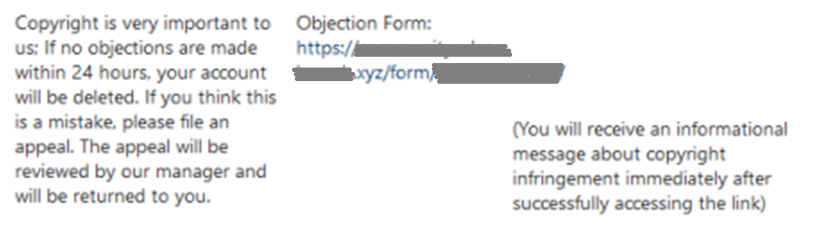
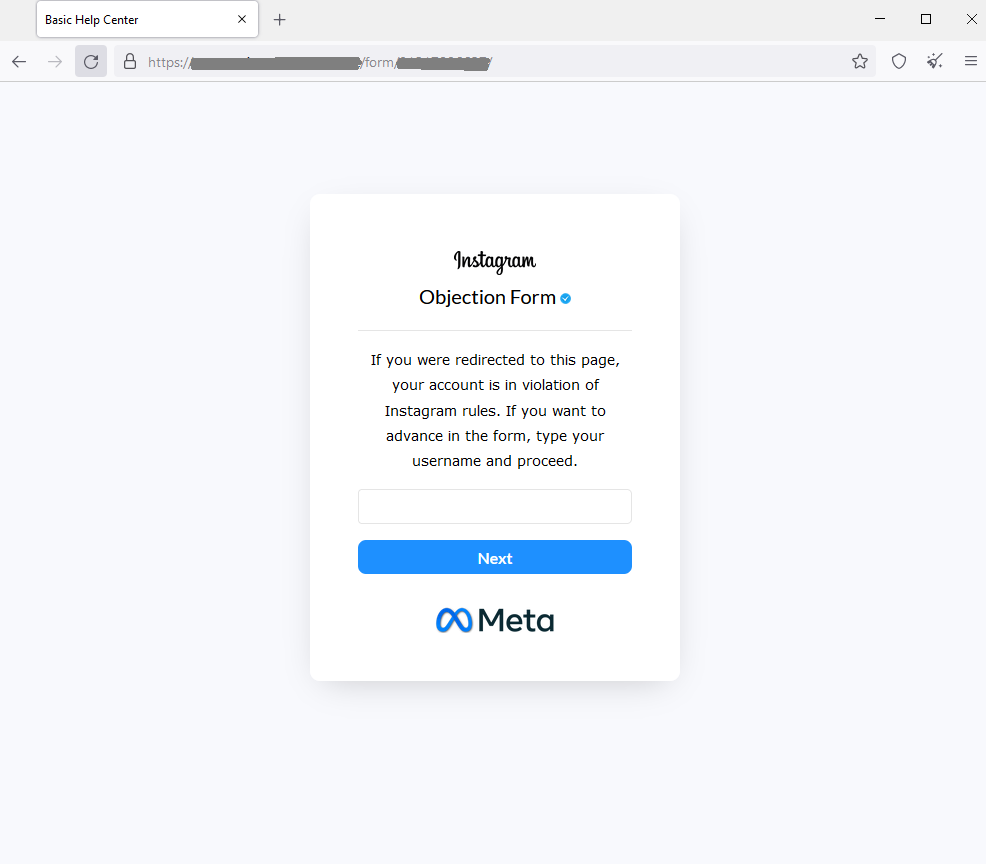
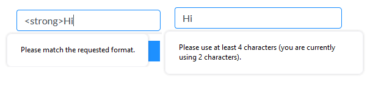
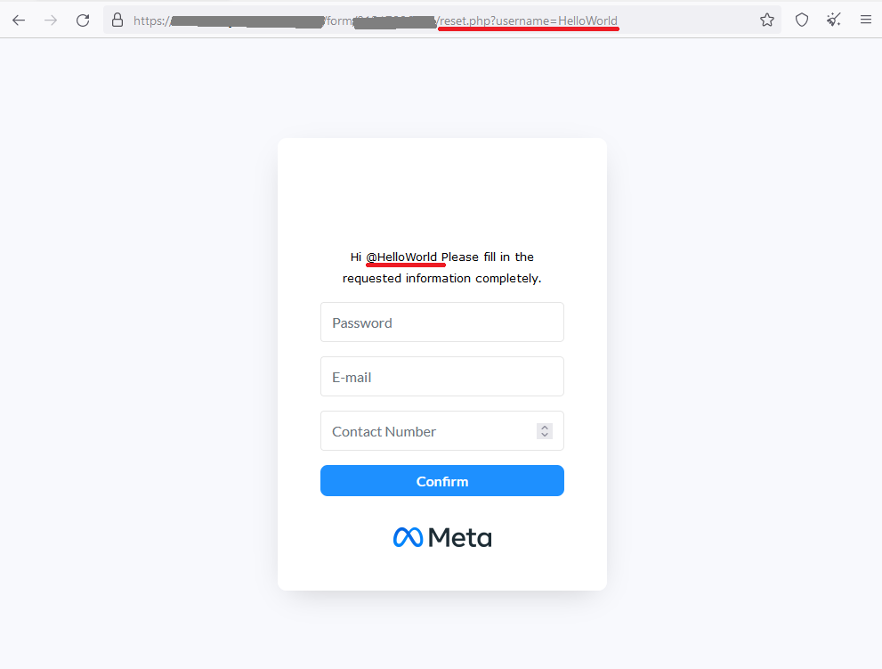
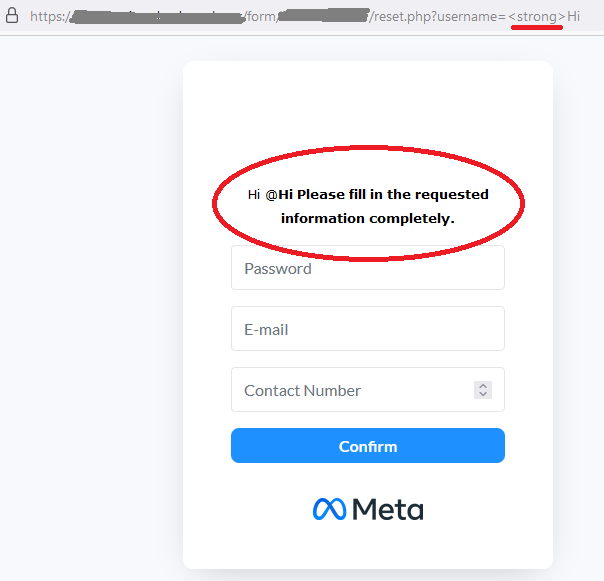

blog.vsim.xyz / blog Public
blog.vsim.xyz / blog Public
vulnerable-phishing,
exploring a Meta- account phishing site.
to note;
This is no way to be mistaken for vigilantism or hacktivism. I intended not to exploit the site nor gain any value from said exploitation. Everything done in this article has been done out of sheer curiosity and I can't really advise following in my footsteps.
.. and then to the fun stuff!
"You've violated the copyright rules"
Now while at face value it may seem plausible, the message itself gives it away pretty quickly.

I've censored some parts that could either be tied to me by the site owner. I've also censored the domain name.
Noteworthy, the domain ends with ".xyz". An interviewer told me once after seeing my site,
"That's got to be the first legitimate .xyz site I've ever seen."
What you'll also notice is the urgency of the first part of the message to get you to click the link.
So let's click it! Let's see what's behind it!

To state the obvious; they're impersonating Meta and Instagram. These sites are often visually very, very close to the real thing
But internally, they're built with simply functionality in mind. It's not uncommon to find a XSS vulnerability from a site like this.
With usernames you can try to inject html and / or JavaScript into the name, as it's often displayed somewhere on the site. Let's try that with the "strong" tag.

Unsuprisingly, they've actually thought about this, and do not allow the special characters. For some reason under 4 character names are not okay either.
We have no other choice but to play along.

It's at this point I start to notice the site is possibly vulnerable. If you take a look at the site, you'll find that the username we gave is both
displayed on the site and in the URL. That's interesting.. can we inject a new username into the site from the URL? If so, can we inject html tags?

and yes indeed, would you look at that. They forgot to strip tags from the URL parameters, and as we give it the "strong" tag it gets passed
straigt into the site! You can see that the text after the username is bolded, due to the strong tag. This means you can embed your own html into the site. Given this information, we could try to exploit it further
with JavaScript and "script" tags. But these guys run their site behind CloudFlares proxy, which automatically detects the tags and
disallow the request. Weird to think that's what they did think of, but not sanitazing the URL parameters.
That's all we wanted to see though, as now we're absolutely certified to call them "skids" and report them to the authorities :)
So what did we learn?
As an user of the interwebs, you should always keep in mind where you're typing your login credentials to. When logging in, double-check the site. Does it look suspicious? Is the URL right?
There's a key takeaway for web development aswell. You need to always sanitize the user input. Always. On this case the possible exploiting vectors are slim, but this is not always the case. When building complex applications, try to think of these questions
- "What information are we giving out?"
- "What information is the user giving us?"
- "What can be done with the information?"